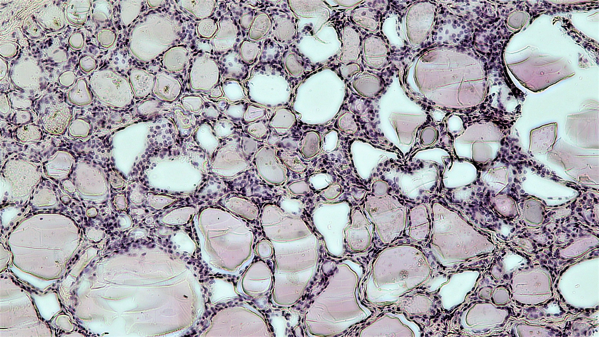

11. Thyroid and endocrine disorders
Two blood samples have low free thyroxine. In one, thyroid-stimulating hormone is elevated; in the other, it is low. Treating these as the same failure discards useful information: whether the upstream controller responds to inadequate hormone availability. A third sample has elevated total thyroxine while free thyroxine remains unchanged, raising a different question about plasma binding. This chapter follows a hormone from a polarized follicular cell to its target, then asks which observations distinguish production failure, control failure, binding changes and misleading measurement.
Official L24–L25 supply the topic spine. Complete captions were read through the closing questions. A separate source-visual audit inspected six contact sheets containing 112 sampled stills and nine native frames; this chapter attributes that bounded record without claiming continuous audio/video review. Corrections, research extensions and original teaching models are identified locally. Prerequisites: membrane transport and endocrine signaling.
11.1 Thyroid synthesis and transport L24 03:18
The thyroid is an endocrine gland in the anterior neck, below the larynx, with two principal lobes joined by an isthmus. Endocrine release places a messenger into the internal circulation; it does not require a duct to an external surface. Its follicular cells produce thyroxine, abbreviated T4, and triiodothyronine, abbreviated T3. The numerals count iodine atoms per hormone molecule. These are iodinated amino-acid derivatives, not enzymes. A hormone conveys a signal; an enzyme catalyzes a reaction. Their roles must remain distinct when a caption interchanges them.
A thyroid follicle is a three-dimensional epithelial enclosure around a central lumen. Its wall contains many follicular cells, also called thyrocytes. A round profile in a section therefore represents a cut through an enclosure, not one enormous circular cell. Colloid is protein-rich luminal material. The cell's apical membrane faces the lumen; its basolateral membrane faces neighboring cells and interstitial fluid connected to capillaries. “Blood-facing” below abbreviates the latter route, not direct contact between every membrane and freely flowing blood. This polarity gives secretion a destination: apical protein release reaches colloid, whereas basolateral hormone export can reach blood.


Building material and signal use different routes L24 08:02
Thyroid-stimulating hormone (TSH, or thyrotropin) is a pituitary glycoprotein hormone. It binds the extracellular part of the TSH receptor on the blood-facing surface of a follicular cell. Receptor activation changes intracellular signaling and regulates thyroid functions. TSH need not pass through that receptor into the cell to act. The source's statement that binding means entry is corrected: a receptor can communicate across a membrane while its signal remains outside. TSH itself is also not raw material for T3 or T4.
Thyroglobulin (Tg) is a large protein synthesized by follicular cells, processed through secretory machinery and released into colloid by apical exocytosis. In exocytosis, a secretory vesicle fuses with a cell membrane and opens its contents to the destination space. Tg provides selected tyrosine residues on which hormones are assembled. A residue is an amino-acid unit incorporated in a protein chain. Tg supplies a scaffold and storage substrate, not the circulating carrier called thyroxine-binding globulin. Coscia and colleagues combined human Tg cryo-electron microscopy with mutagenesis and in vitro production assays to identify hormonogenic tyrosine pairs. Its publisher abstract and extended-data descriptions were accessible; complete article access was not.
The second material is iodide, the anion I−, supplied through dietary iodine absorption and circulation. NIS, the sodium/iodide symporter, transports iodide across the basal membrane with sodium. A symporter couples different solutes moving in the same direction. The sodium electrochemical gradient can drive iodide uphill against its own concentration gradient. The sodium/potassium ATPase maintains much of that driving force by using ATP to export sodium and import potassium. NIS is secondary active transport: ATP hydrolysis belongs to the gradient-maintaining pump, not an assumed ATP-powered NIS stroke. The 2014 NIS transport study, accessed at indexed abstract depth, states two Na+ per I−. Sodium does not carry iodide like a rider; both interact with coupled transport machinery.
Iodide next crosses the apical membrane toward colloid. Pendrin is an apical anion transporter involved in that route. Its anion-exchange description does not make it directly ATP-driven. It is neither a hormone receptor nor the only possible apical pathway. The diagram labels “pendrin / apical route” without specifying unverified exchange stoichiometry or asserting exclusivity. The independently accessed JCI secretion study describes basal uptake and the apical exchanger in its introduction. An indexed full-text iodine-metabolism review names additional apical routes; detailed alternative-channel regulation is outside this model.
Assembly at the apical–colloid interface L24 13:51
Thyroid peroxidase (TPO) is an enzyme acting in the apical extracellular context, using hydrogen peroxide in oxidation and iodine incorporation into Tg tyrosyl residues. Organification means incorporation into that organic substrate. Monoiodotyrosine (MIT) has one iodine atom on a tyrosyl residue; diiodotyrosine (DIT) has two. “One or two iodine molecules” is the wrong count. The source's I2 shorthand does not establish a measured free molecular-iodine pool. The animation therefore represents an apical reaction step without assigning a concentration to such a pool.
TPO also participates in coupling appropriate iodotyrosyl residues within Tg. Two DIT residues supply the iodine count of T4; an MIT and a DIT can supply that of T3. Atom counting checks composition, but cannot determine donor/acceptor orientation or prove the positional isomer formed. Molecular arrangement matters. The native bovine Tg cryo-EM study, accessed through its indexed publisher abstract, resolves nascent hormone at a hormonogenic site. That is structural evidence in bovine protein, not a molecular measurement in Figure 11.1. Our scaffold icon is an abstract substrate, not a molecular conformation.
At this stage the hormone-containing residues remain attached to Tg in colloid. Producing that protein-bound store is not yet delivering free hormone to blood. A synthesis defect and a release defect can both lower circulating hormone while leaving different stored material. A lumen that appears full in a prepared section cannot determine how rapidly hormone is made or released. Static tissue organization does not measure reaction flux.
Retrieval, cleavage and export are separate L24 19:59
Endocytosis brings material into a membrane-bounded intracellular compartment through membrane invagination and separation. Cells retrieve iodinated Tg from colloid and process it in the lysosomal pathway. Proteolysis, enzymatic protein cleavage, liberates hormone from its precursor. Residual iodotyrosines can be deiodinated and their iodide recycled, an extension supported by Coscia's extended-data account. Stored material thus has several distinguishable fates: continued luminal storage, retrieval, hormone liberation and recovery of unused iodine. One generic “secretion” arrow cannot explain them.
Free T3/T4 then leave across the blood-facing membrane through hormone transport machinery. The source slide's “exocytosis” label for this step is corrected; it must not become peptide-vesicle release of free hormone. Di Cosmo and colleagues localized Mct8 basolaterally and used mouse knockout secretion experiments to establish an export role. The diagram includes MCT8 in a hormone export route without claiming that it alone explains all human secretion. This differs in cargo, membrane and direction from apical Tg exocytosis.
In plasma, thyroxine-binding globulin (TBG) is a carrier that binds thyroid hormone reversibly; other plasma proteins also contribute. Total concentration includes bound and unbound hormone. Free concentration includes only the unbound fraction. TBG and Tg differ in location and function despite their similar names. The NIDDK thyroid-test account explains how binding-protein changes can alter total T4 without equivalent free-T4 changes. A carrier complex is not a vesicle or an irreversible inactivation product.
A binding calculation separates total from free
For a synthetic equilibrium calculation, let \(F\) be free hormone concentration, \(B\) bound concentration and \(P\) available carrier-site concentration, all in the same amount-per-volume unit. Let \(K\) be a dissociation constant in that unit. One independent site class at equilibrium gives \(B/P=F/K\). Total site capacity is \(P_{\mathrm{tot}}=P+B\). Substitution and collection of the terms in \(B\) yield
\[B=\frac{P_{\mathrm{tot}}F}{K+F},\qquad C_{\mathrm{tot}}=F+B.\tag{11.1}\]The denominator accounts for site occupancy and prevents binding beyond capacity. At \(F=0\), bound concentration vanishes; as \(F/K\) grows, bound concentration approaches capacity. With synthetic \(F=1\), \(K=9\), \(P_{\mathrm{tot}}=90\), the result is bound 9, total 10 and free fraction 0.10. Doubling capacity at fixed free concentration gives bound 18, total 19 and free fraction 1/19 = 0.052632. These values deliberately are not physiological T4 fractions. They isolate how total concentration can change while free concentration stays fixed.
Fixed free concentration assumes a reservoir or other processes maintain it. In a closed sample with fixed total hormone, extra carrier would initially lower free concentration instead. In a body, production, clearance and feedback all participate. Equation (11.1) therefore cannot predict a patient's trajectory from a carrier change alone. Its narrower implication for the opening case is sound: elevated total T4 does not logically prove increased free hormone or thyroid production.
Cell entry and systemic effects L24 24:35
Tissue access requires transport of unbound hormone across target-cell membranes. Tissue deiodination can convert T4 to T3. T3 has greater activity in conventional nuclear receptor signaling; T4 is a major secreted form and important precursor, not inert waste. A nuclear receptor is an intracellular receptor capable of regulating gene expression. Membrane transport and local metabolism therefore intervene between a plasma measurement and nuclear action. Equal plasma totals need not imply equal signaling in every tissue. This answers the closing question about which hormone is more active without making potency the whole physiological account.
Thyroid hormones influence energy turnover, protein metabolism and heat production. Adequate signaling is particularly important for nervous-system development, including maturation and myelination; myelin is an insulating membrane sheath around many axons. A developmental requirement does not establish universal adult neurogenesis. Thyroid state also modifies cardiac adrenergic responsiveness, heart rate and contraction. Adrenergic concerns epinephrine/norepinephrine signaling; “androgenic,” used in a caption, concerns sex hormones and is wrong here. The OpenStax thyroid account supports the metabolic, developmental and catecholamine-response relationships.
The late source material also includes gastrointestinal motility/secretion, sweating, skin perfusion and hair/nail growth. These effects belong to a multi-organ account, not a list of guaranteed findings in every individual. Intestinal transit can accelerate with excess hormone and slow with deficiency; heat production interacts with heat loss; skin and hair changes integrate turnover over time. Increased cardiac output does not require every blood-pressure component to rise, because resistance and pulse dynamics also matter. These consequences motivate testing but do not uniquely diagnose a cause. Distinguishing the first two samples requires the upstream controller.
11.2 Axis feedback L24 04:02
The hypothalamic–pituitary–thyroid axis links three sites through signals. Neurons in the hypothalamic paraventricular nucleus produce thyrotropin-releasing hormone (TRH). The hypophysial portal circulation carries this signal to the anterior pituitary, where thyrotroph cells secrete TSH. TSH enters systemic blood and regulates follicular cells. These are successive regulatory interactions. TRH is not converted into TSH, and TSH is not converted into thyroid hormone. The JCI account of thyroid-hormone action discusses nuclear signaling, tissue conversion and feedback integration; its accessible relevant sections support this compartmental extension.
Negative feedback means that a downstream response reduces the upstream drive promoting that response. Thyroid-hormone action restrains hypothalamic TRH and pituitary TSH regulation. Local conversion and receptor signaling matter, so this is not simply a blood molecule pressing a mechanical switch. If thyroid output falls while the controller remains functional, reduced feedback tends to increase TSH drive. If the pituitary fails to provide adequate drive, low thyroid hormone can coexist with low or inappropriately normal TSH. “Normal” here refers to a laboratory interval; an apparently ordinary value can be inadequate for the simultaneously low downstream hormone.
A primary disorder originates in the peripheral gland under discussion. A central disorder originates in its hypothalamic/pituitary regulation. The American Thyroid Association test explanation supports elevated TSH with low free T4 in overt primary hypothyroidism, suppressed TSH with elevated thyroid hormone in common primary hyperthyroid patterns, and low free T4 with inadequate TSH in pituitary disease. These directions correct the recording's disputed chart. They are useful axis patterns, not a complete classification of every discordant assay result.
A minimal controller makes the competing failures explicit
For an original teaching construction, let \(s\geq0\) be normalized TSH-like drive and \(h\geq0\) normalized available thyroid-hormone signal. Both equal 1 at the synthetic baseline. The independent variable \(\tau\) is dimensionless model time; it has no conversion to seconds or days. Let \(a\geq0\) describe central secretory capacity, \(g\geq0\) gland response per unit drive, and \(u\geq0\) autonomous hormone input. The model is
\[\frac{ds}{d\tau}=\frac{2a}{1+h}-s,\qquad \frac{dh}{d\tau}=gs+u-h.\tag{11.2}\]The first production term decreases as hormone signal rises; its derivative is \(-2a/(1+h)^2\). Subtracting \(s\) gives first-order removal of upstream drive. The second equation combines stimulated gland output and an independent input, then removes hormone proportionally to its current signal. Every term is normalized per model-time unit. No parameter is an estimated human secretion rate, receptor constant or half-life. TRH is collapsed into central capacity rather than assigned a third fitted state. The model also merges T3 and T4 availability, binding and local conversion into one signal.
At a steady state both derivatives vanish. Thus \(s_*=2a/(1+h_*)\) and \(h_*=gs_*+u\). Eliminating drive gives \((h_*-u)(1+h_*)=2ag\). With no independent input, solving the quadratic and retaining the nonnegative root yields
\[h_*=\frac{-1+\sqrt{1+8ag}}{2},\qquad s_*=\frac{2a}{1+h_*}.\tag{11.3}\]This is the useful hinge: hormone alone depends on the product \(ag\), so a lower gland response and lower central capacity can produce the same downstream signal. Upstream drive separates them. From baseline \(a=g=1\), reduce \(g\) to 0.25: the equilibrium becomes \(h_*=0.366025\), \(s_*=1.464102\). Instead reduce \(a\) to 0.25 with \(g=1\): hormone again becomes 0.366025 but drive is 0.366025. The first case partly compensates by raising drive; compensation cannot fully restore hormone because this controller has finite gain. The second lacks adequate central drive. The opening pair of blood samples illustrates this distinction qualitatively, without identifying model units with clinical measurements.
A third construction leaves \(a=g=1\) and adds \(u=1\). The steady relation becomes \((h_*-1)(1+h_*)=2\), so \(h_*=\sqrt3=1.732051\) and \(s_*=0.732051\). Increased independent input raises hormone while feedback lowers upstream drive. Calling the low drive “the cause of low hormone” would invert causality in this case. The feedback circuit explains why measuring a controller and an output together can be more informative than either alone.
The zero boundary provides an additional check. At \(s=0\), its derivative is nonnegative; at \(h=0\), its derivative is \(gs+u\geq0\). Continuous solutions cannot leave the nonnegative region through either boundary. At \(g=0,u=0\), hormone eventually vanishes while drive approaches \(2a\). At \(a=0,u=0\), drive vanishes and so does hormone. These limits test the construction without making claims about untreated humans. Circadian and pulsatile secretion, delays, illness, medication effects, assay interference, changing binding and individual set points are omitted. Those omissions become consequential when an actual result differs from the clean directional pattern.
11.3 Endocrine disease mechanisms and thyroid measurements L25 01:37
Hyperfunction describes excessive functional output; hypofunction describes inadequate output. Neither specifies the site or cause. Abnormal hormone action can arise from altered production, transport, conversion, receptor response or clearance. A target may respond inadequately despite abundant circulating signal, as in hormone resistance. A hormone can also be high because the controller compensates for poor downstream action. Thus “high hormone” and “overactive target tissue” are related possibilities, not equivalent definitions. Our model varies production and control but does not include resistance, so it must not absorb every endocrine disease into its two states.
The hypothalamus participates in temperature regulation, appetite, sleep and several endocrine axes. Tumors, injury and genetic defects can affect these functions in different combinations. The source's symptom examples do not establish a characteristic half-hour temperature cycle or a specific lesion. Pituitary dysfunction likewise requires a named cell population and hormone. Excess growth hormone before growth-plate closure can cause gigantism; excess after closure produces acromegaly, with different skeletal consequences. NIDDK's acromegaly account supports that developmental distinction. Loss of pituitary function can impair several downstream glands, while a secreting tumor can produce excess of one hormone and impair other pituitary functions. “Master gland” does not mean uniformly high or low output from every pituitary cell.
Excess, deficiency and intervention act at different steps L25 05:43
Hyperthyroidism means excessive thyroid synthesis/secretion. Thyrotoxicosis describes excessive thyroid-hormone action from any source, including release of stored hormone or an external source. This distinction matters mechanistically: inhibiting new synthesis and reducing exposure are different tasks. Hypothyroidism means inadequate thyroid-hormone action, commonly from deficient hormone availability. Fatigue, cold intolerance, constipation, dry skin and weight gain can accompany deficiency; heat intolerance, palpitations, sweating, weight loss and more frequent bowel movements can accompany excess. These are overlapping, context-dependent findings rather than a symptom score proving etiology.
The lecture names synthesis-inhibiting drugs, beta blockers, radioactive iodine and surgery. Their targets differ. Synthesis inhibition acts within production; beta blockade can reduce selected adrenergic symptoms without correcting all hormone production; radioiodine and surgery act on thyroid tissue. Levothyroxine supplies T4 as replacement. It is not defined by stimulating a failed gland to make hormone, despite one early source sentence. The later source wording correctly identifies replacement. These categories are explained mechanistically rather than offered as an interchangeable treatment list. Current NICE thyroid guidance separates assessment and management by context and notes assay interference from biotin. No dose or personal selection rule is provided here.
A chart is not a reference interval L25 10:42
The recording's table displays lower TSH group means in its hypothyroid rows and higher means in its hyperthyroid rows than in the corresponding rows labeled normal. These numerical directions are visible on the slide, so the problem is not merely a caption transcription error. Applied as a generic primary-thyroid rule, that pattern conflicts with negative feedback and the independently supported comparisons below. The displayed mean ± standard-deviation values and t-tests are group summaries, not laboratory reference intervals. Unit headers are visible, but the cohort context, assay method and original citation are not established. We therefore do not turn these group summaries or their p-values into diagnostic cutoffs.
| Mechanism | Hormone finding | TSH response | Inference boundary |
|---|---|---|---|
| Overt primary thyroid deficiency | Low free T4 | Generally high | Functional central compensation; does not identify the specific thyroid lesion. |
| Common primary hyperthyroid pattern | Elevated free T4 and/or T3; free T4 may remain within its interval in T3-predominant excess | Suppressed | Different causes of excess require additional evidence. |
| Central hypothyroidism | Low free T4 | Low or inappropriately normal | Normal-range TSH can be inadequate for the low T4. |
| Binding-protein change | Total may change while free remains similar | Depends on actual signaling and context | Total hormone alone does not isolate production. |
A reference interval describes a specified comparison population and assay, with its own inclusion criteria and statistical construction. A sample mean estimates a group's center; a standard deviation describes its dispersion. A p-value measures compatibility of data with a specified null model and test assumptions. It is neither the probability that one individual has disease nor an assay threshold. Even a precise difference between group means can coexist with substantial overlap among individual values. Identifying the quantity, assay, sampling conditions and decision question comes before interpreting the number.
The first opening sample is compatible with overt primary deficiency under the usual axis assumptions; the second raises central failure or other explanations for inadequate TSH. Neither result uniquely determines a lesion or management. Free versus total hormone, pregnancy, severe illness, medications and assay effects can change interpretation. Normal T3 does not exclude hypothyroidism. These qualifications are supported by the official NIDDK test discussion and ATA test account. The clean model teaches a causal contrast, then yields to richer evidence when its assumptions fail.
Enlargement and cancer add structural questions L25 11:57
A goiter is an enlarged thyroid. Size is a structural observation, whereas hormone availability is a functional one. The ATA goiter account explicitly allows enlargement with excess, deficient or ordinary hormone production. Iodine deficiency is one possible cause; autoimmune disease and nodular enlargement supply others. A neck mass, discomfort or swallowing difficulty cannot identify its cause from appearance alone. Blood tests address function; examination and ultrasound address structure; neither automatically substitutes for the other.
Cancer involves malignant cellular growth with invasive/metastatic potential. Thyroid cancer is not one uniform follicular-hormone excess disease. The NCI thyroid-cancer PDQ distinguishes papillary, follicular, medullary and anaplastic types, with treatment depending on subtype and disease extent. Radioiodine responsiveness cannot be assumed across them. The source's broad pollution attribution and statement that gene/cell therapies can simply be prescribed are not retained as established causal or routine-treatment facts. A proposed molecular target, experimental cell product and supported subtype-specific therapy occupy different evidence stages. The accessed NCI summary supports that need for specificity; this chapter makes no exhaustive claim about all trials or product authorizations.
11.4 Nonthyroid endocrine disease comparison L25 14:52
The thyroid case gives a reusable question: which compartment produces the signal, which variable controls it, and which downstream variable is being measured? Reuse the question across glands, while changing the actual controller. Calcium-sensitive parathyroid regulation is not the TRH–TSH circuit. The adrenal medulla is not the adrenal cortex. A pancreas has both exocrine and endocrine tissue. A disease matrix becomes informative only when its rows preserve these differences.
Parathyroid hormone and calcium
The parathyroid glands, usually four small glands near the posterior thyroid, contain cells that secrete parathyroid hormone (PTH). They are anatomically associated with the thyroid but perform a different endocrine task. PTH responds to extracellular calcium and acts through bone and kidney pathways, including renal support of active vitamin D production and thereby intestinal calcium absorption. The OpenStax parathyroid section provides the organ-level relationships. This is a redistribution and transport problem: raising plasma calcium is not creation of new calcium atoms.
In primary hyperparathyroidism, excessive/inappropriate PTH can coexist with elevated calcium. In hypoparathyroidism, inadequate PTH can produce low calcium and higher phosphate. The source's brief ambiguous sentence at 16:33 is clarified immediately as the high-PTH case; the audit does not support accusing the entire source of a reversed direction. A high PTH measurement also need not mean primary hypercalcemic disease: kidney-related secondary hyperparathyroidism has a different context. Calcium and PTH must be interpreted together, with kidney and vitamin-D physiology included. Muscle symptoms, stones or skeletal loss can motivate investigation without uniquely establishing this mechanism. Surgery, calcium/vitamin D and hormone replacement address different disorders and are not a universal prescription list.
The adrenal label contains several mechanisms L25 17:36
The adrenal cortex is the outer endocrine region of each adrenal gland; the medulla is its inner catecholamine-producing region. Cortisol is a glucocorticoid with metabolic and stress-response functions; aldosterone is a mineralocorticoid involved in sodium/potassium regulation. Adrenocorticotropic hormone (ACTH) from the pituitary regulates cortisol production. These definitions prevent an ACTH-producing pituitary tumor from being described as a pituitary source of cortisol.
| Disorder | Site / altered signal | Consequence and boundary |
|---|---|---|
| Addison disease | Primary adrenal insufficiency: inadequate cortisol, sometimes aldosterone | Loss of stress-response capacity and sometimes impaired salt/volume regulation. Central ACTH deficiency is a different cause of low cortisol. |
| Cushing syndrome | Excess glucocorticoid exposure; exogenous or endogenous causes | Metabolic, vascular and tissue effects. Cushing disease specifically denotes pituitary ACTH-driven endogenous excess. |
| Congenital adrenal hyperplasia (CAH) | Inherited steroid-synthesis enzyme defects | Precursor/product changes depend on the defect; severe 21-hydroxylase deficiency can reduce cortisol/aldosterone and increase androgen effects. Not every CAH form shares this pattern. |
| Primary aldosteronism / Conn syndrome | Inappropriate adrenal aldosterone production | Can produce hypertension and potassium loss; the aldosterone pathway is distinct from cortisol excess. |
| Pheochromocytoma | Catecholamine-producing tumor of adrenal medulla | Can alter blood pressure and heart rate. It is not a cortical androgen or cortisol tumor. |
| Androgen-producing lesions / virilization | Excess androgen action, with several possible sources | Virilization describes a phenotype; it does not specify one tumor, cause or prognosis. |
NIDDK's insufficiency definitions distinguish primary adrenal damage from pituitary ACTH failure and hypothalamic failure. The Cushing account distinguishes medication exposure, pituitary ACTH, ectopic ACTH and adrenal causes. Thus low cortisol and high cortisol each admit more than one causal route. A high upstream signal may compensate for gland failure; it can also drive a gland to excess in another disorder. The identity of the axis and the autonomy of the signal matter.
The HRSA newborn-screening account supplies the common 21-hydroxylase-deficiency example; the NLM CAH classification explicitly lists differing enzyme defects and phenotypes. OpenStax adrenal physiology supports cortical hormone organization. The NICHD pheochromocytoma account supports medullary catecholamine origin. These independently checked distinctions preserve the source's late adrenal categories without adopting a uniform CAH hormone pattern or the unsupported claim that every late-detected adrenal tumor has one high mortality risk. Benign/malignant behavior, secretion and extent are separate questions.
Diabetes and insulinoma move glucose in opposite directions L25 19:21
The endocrine pancreas regulates glucose through several signals, including insulin. Hyperglycemia is elevated blood glucose; hypoglycemia is low blood glucose. Type 1 diabetes involves autoimmune loss of insulin-producing beta-cell function and can begin beyond childhood. Type 2 diabetes involves insulin resistance and progressive inadequacy of secretion relative to demand. Resistance is not restricted to failed insulin binding; downstream signaling and tissue metabolism contribute. As developed in Chapter 9, tissue-specific glucose transport matters: not all glucose entry requires insulin, and the brain is not protected from glucose shortage by simply declaring transport insulin-independent.
Insulinoma L25 21:26
An insulinoma is an insulin-secreting neuroendocrine tumor. Inappropriate insulin availability during low glucose can sustain uptake/storage influences and reduce glucose production, worsening hypoglycemia. The source's initial phrase about lack of insulin is corrected by its subsequent excess-insulin explanation. The NCI pancreatic neuroendocrine-tumor account identifies low blood sugar with insulinoma. Fainting is not specific for the tumor; biochemical context and localization remain separate. Nor is every pancreatic tumor an insulinoma: cell lineage and secretory behavior matter.
The late cell-therapy recap points back to Chapter 10. Encapsulation and immunoisolation attempt to protect transplanted insulin-producing cells while permitting molecular exchange. Animal experiments, investigational human products and specifically authorized treatments must retain their separate evidence boundaries. The source recap does not independently establish long-term normal glucose in every recipient or routine availability of a particular encapsulated product. No new efficacy or authorization claim is inferred here.
Gonadal function includes reproduction and feedback L25 22:13
Polycystic ovary syndrome (PCOS) concerns a combination of reproductive and endocrine/metabolic features. Ovulation is release of a mature egg from an ovarian follicle; androgens are a class of hormones whose excess action can contribute to some PCOS features. The NICHD account describes disturbed ovulation, elevated androgen measures or signs, and follicular morphology, with ovarian growths not required in every affected person. Small arrested follicles are not equivalent to a collection of large cysts requiring routine removal. Syndrome, image appearance and a distinct ovarian cyst are different objects.
The lecture lists hormonal contraception, antiandrogens, insulin sensitizers, ovulation induction and symptom treatment. These categories address different goals: cycle/endometrial regulation, androgen-related symptoms, metabolic context and fertility. Listing them does not select a treatment or show that each cures the syndrome. Likewise weight management, nutrition and activity belong to an individualized metabolic context, not a single causal explanation for all PCOS. The chapter retains the categories but does not carry forward a general cyst-removal rule.
Hypogonadism L25 23:57
Hypogonadism is inadequate gonadal function, which can involve sex-hormone production and reproductive function. A primary gonadal defect and deficient hypothalamic/pituitary stimulation produce different upstream/downstream patterns, as in the thyroid example. Developmental timing changes whether puberty, adult sexual function or fertility is affected. The Endocrine Society's male hypogonadism account emphasizes repeated context-sensitive measurements and cause assessment; fatigue or a single age-related measurement is insufficient. Testosterone replacement is not a general fertility treatment and can conflict with fertility goals. The source's estrogen/progesterone and testosterone categories therefore remain examples requiring context, not automatic responses to low libido or aging.
A test must answer a specified question L25 24:38
A basal measurement samples the system under specified unprovoked conditions. A dynamic test observes its response to a controlled challenge. TSH, ACTH, cortisol, growth hormone, prolactin and insulin are different signals with different temporal and assay contexts. An isolated value cannot establish every secretion abnormality. The oral glucose tolerance test challenges glucose regulation; dexamethasone suppression examines glucocorticoid-feedback behavior. The NIDDK Cushing discussion describes suppression and other tests within a broader diagnostic assessment. This chapter explains their questions without supplying a self-administered challenge protocol or decision threshold.
Imaging asks where a structural change is located and what anatomy it affects. MRI, CT and ultrasound provide different forms of structural information; they do not themselves prove that a visible lesion secretes the measured hormone. Conversely, a functional disorder need not produce a conspicuous mass. Assay identity, units, collection time, physiological state, medication exposure and the reference population belong beside a result. A defensible causal account may require repeated measurements, paired upstream/downstream signals, dynamic response and anatomical evidence. That is why a table of group means cannot replace an investigation of the opening samples.
The closing endocrine/exocrine question can now be answered mechanistically. Endocrine disease can alter a circulating signal and therefore distant receptor-bearing tissues. Exocrine disease can alter a product delivered through a duct, obstruct that route or damage local tissue. The pancreas participates in both systems, so organ name alone cannot settle the mechanism. Feedback disruption can arise from peripheral production, central drive or target response. The most transferable habit is to locate the source, route, target and measured quantity before attaching a disease label.
11.5 Reproduce the model and test the inference
The dependency-free Python program implements binding equilibrium (11.1), controller equilibrium (11.3) and a forward-Euler integration of (11.2). It takes finite nonnegative normalized capacities/input and model duration within the range for which intermediate and returned floating-point values remain finite; the binding function requires a positive dissociation constant. Integration requires a positive step no larger than 0.05 model-time units and duration no larger than 100. Inputs outside these contracts raise an error. The program reads no patient data, writes no files and makes no network requests. The visual uses matching JavaScript functions.
python code/ch11_feedback.pyForward Euler evaluates both derivatives at the current state, then advances each state by the derivative multiplied by the step. Simultaneous evaluation matters: using a newly updated drive in the hormone derivative would silently implement a different scheme. We used a 0.01 step and compared with 0.005. Executed checks cover analytic equilibrium residuals, nonnegative trajectories, zero-capacity limits, convergence toward the equilibria, step refinement, binding capacity/accounting and invalid inputs. For six parameter sets, 40-model-unit trajectories approach the analytic equilibrium within 10−6; at 20 units the two step sizes differ by less than 10−5. These are implementation checks of a synthetic model, not physiological validation.
The mechanistic route view and the differential-equation view have different clocks. Ordered synthesis stages have no assigned biological durations. Feedback model time is an explicit dimensionless independent variable. Its relative progression is calculated, but a minute of playback is not a minute of human endocrine response. A speed control changes presentation, never a reaction-rate parameter. This separation lets a reader inspect transport and feedback without mistaking smooth motion for a measured trajectory.
The model's greatest omission is also its lesson about inference. Distinct changes can produce the same measured output. Pairing drive with signal separates two chosen failures, but many other failures remain unmodeled. Binding changes, assay interference, time-dependent illness and tissue resistance can break the simple mapping. A more elaborate simulation would need additional state variables and independently identified parameters; adding attractive curves without those observations would not improve the evidence. The opening case is resolved at the level justified by the model: paired variables constrain causal possibilities, while total hormone and symptoms alone leave important ambiguity.
11.6 Six problems with worked solutions
Problem 11.1. Repair a transport storyboard
A proposed animation shows TSH passing through its receptor, iodide crossing bare basal membrane, pendrin hydrolyzing ATP, T3/T4 leaving in peptide vesicles and TBG being synthesized into colloid. Replace each route with the appropriate compartmental mechanism. Identify which two steps really involve vesicle traffic.
Worked solution
TSH binds the extracellular TSH receptor and signals across the membrane; entry is not required for its regulatory action. Iodide uptake uses basal NIS with sodium-gradient coupling, supported by Na/K ATPase. Apical iodide transfer uses anion transport including pendrin; a directly ATP-powered pendrin step is unsupported. The protein entering colloid is Tg, synthesized by the follicular cell. TBG is a plasma carrier and must remain distinct.
Apical Tg release uses exocytosis: a vesicle opens into colloid through membrane fusion. Retrieval of iodinated Tg uses endocytosis, followed by intracellular proteolysis. Liberated T3/T4 then cross the basal membrane through hormone transport machinery including MCT8, rather than being assigned peptide-granule exocytosis. These repairs specify signal, cargo, side and transport type; changing only arrow labels would not fix the original path geometry.
Problem 11.2. Audit iodine accounting
An idealized pool has six MIT and ten DIT residues available for selected coupling events. Suppose four T3 and three T4 products are formed, using one MIT plus one DIT for each T3 and two DIT for each T4. Count iodine atoms before and after, including unused residues. Does conservation prove the coupling orientation or physiological yield?
Worked solution
Initial iodine count is \(6+2(10)=26\) atoms. Four T3 use four MIT and four DIT, containing \(4(1+2)=12\) iodine atoms. Three T4 use six DIT, containing \(3(2+2)=12\) atoms. Ten DIT are consumed in total, and two MIT remain. Products therefore contain 24 atoms, unused residues two, preserving 26.
The residue ledger also checks feasibility: MIT use four does not exceed six, and DIT use ten equals supply. It does not establish positional isomer, donor/acceptor structure, enzyme accessibility or actual yield. The chosen couplings are premises of this accounting example. A numerical conservation check can reject impossible consumption while remaining insufficient to prove molecular chemistry.
Problem 11.3. Change binding capacity
Derive (11.1) from \(B/P=F/K\) and site conservation. With the synthetic values in section 11.1, compare carrier capacities 90 and 180 at fixed free concentration 1 and dissociation constant 9. Explain why the result cannot be transferred to a closed sample with fixed total hormone.
Worked solution
Substitute \(P=P_{\mathrm{tot}}-B\) into \(KB=FP\): \(KB=FP_{\mathrm{tot}}-FB\). Move the last term left to obtain \(B(K+F)=FP_{\mathrm{tot}}\), yielding (11.1). Bound concentrations are 9 and 18; totals are 10 and 19. Free fractions are 0.10 and 0.052632. Total concentration rises by a factor 1.9 while free concentration remains fixed by the comparison's premise.
A closed sample instead constrains \(C_{\mathrm{tot}}\). Extra binding cannot create hormone. It redistributes existing hormone between bound and free forms, so \(F\) must be solved with the fixed total, rather than held at one. The worked comparison requires an external reservoir or compensating production/clearance. It is a counterexample to “high total necessarily means high free,” not a prediction of real TBG fractions.
Problem 11.4. Distinguish two low-output states
Set independent input to zero in (11.2). Derive the nonnegative equilibrium, compare lowering gland response to 0.25 with lowering central capacity to 0.25, and explain why measuring only hormone signal cannot identify the altered parameter. Check complete loss of gland response.
Worked solution
Steady state gives \(s_*=2a/(1+h_*)\), \(h_*=gs_*\). Substitution gives \(h_*^2+h_*-2ag=0\). The negative quadratic root is inadmissible for a nonnegative signal, leaving (11.3). With \((a,g)=(1,0.25)\), \(h_*=0.366025\) and \(s_*=1.464102\). With \((a,g)=(0.25,1)\), \(h_*=0.366025\) and \(s_*=0.366025\).
Hormone depends only on the product \(ag\) in this equilibrium, so the two parameter pairs cannot be separated from that output alone. Drive carries the additional information. At \(g=0\), hormone vanishes and drive approaches \(2a\), demonstrating finite compensation. This qualitative primary/central contrast agrees with axis physiology, but the computed magnitudes and times do not represent clinical concentrations or prognosis.
Problem 11.5. A significant group difference is not a diagnosis
A slide reports different TSH means between two groups, mean ± standard deviation, and a small t-test p-value. It provides no readable cohort citation, assay method or individual decision rule. Explain what can and cannot be inferred. Then compare low free T4 with high TSH against low free T4 with low TSH.
Worked solution
The test can quantify evidence against a specified equality-of-means model only under its sampling/test assumptions. Without cohort and method information, even that interpretation is incomplete. A mean is not an interval, a standard deviation is not a universal normal range, and a p-value is not the probability that a new individual has disease. Overlapping individual distributions can have precisely estimated different means. No threshold, sensitivity or specificity follows from the displayed summary alone.
Under ordinary axis assumptions, low free T4 with high TSH is compatible with overt primary deficiency and an intact compensatory controller. Low free T4 with low TSH raises inadequate central drive or another confounding context. A normal-range TSH can also be inappropriate when downstream hormone is low. Neither pair establishes the anatomical cause, excludes assay/illness effects or dictates treatment. The recording's reversed generic primary patterns should be corrected, not legitimized by its p-values.
Problem 11.6. Choose the missing question
For each claim, state what distinction is missing: “all Cushing syndrome comes from pituitary cortisol”; “high PTH always means high calcium”; “every pancreatic tumor is an insulinoma”; “PCOS is large cysts needing removal”; “testosterone replacement restores fertility”; “an endocrine mass on MRI proves the hormone source.”
Worked solution
The pituitary makes ACTH, which can stimulate adrenal cortisol; pituitary ACTH excess is Cushing disease, while Cushing syndrome includes other endogenous and exogenous causes. PTH interpretation needs simultaneous calcium and renal/vitamin-D context, because secondary elevation differs from primary disease. Pancreatic tumors have different lineages and secretory states; insulinoma specifically supplies inappropriate insulin and can cause hypoglycemia.
PCOS requires a syndrome-level reproductive/endocrine account; arrested follicular morphology is not a universal large-cyst surgical target. Sex-hormone replacement and gamete production are separate outcomes; testosterone can conflict with fertility goals. Imaging establishes structure and location, not secretion by itself. Each repair demands a named variable or mechanism rather than a more elaborate symptom list. A useful investigation would connect biochemical function, appropriate temporal testing and anatomical localization without assuming any one is decisive alone.
11.7 Sources, access depth and limits
External verification was performed on 4 November 2026. These original notes follow L24 and L25 of NPTEL 102106670, Sudip Mukherjee, IIT (BHU) Varanasi. Complete captions were read through closing questions. A separate audit actually viewed 57 L24 and 55 L25 sampled stills in six contact sheets, plus native frames at L24 06:00,12:00,21:30 and L25 08:30,11:00,17:00,18:30,23:30,25:00. This chapter uses that recorded audit without claiming its author's continuous viewing. Sampling can miss transient material. Source artwork is not copied.
- Transport/chemistry research: 2014 NIS sodium-affinity study, indexed publisher abstract for 2:1 stoichiometry; direct publisher access redirected unsuccessfully. Coscia et al., The structure of human thyroglobulin (2020), DOI 10.1038/s41586-020-1995-4: indexed publisher abstract and extended-data descriptions, with a later direct redirect failure. Native bovine Tg study (2022), indexed abstract only. No full reading of inaccessible Nature articles is claimed. The 2021 iodine-metabolism review was accessed as indexed relevant full-text passages for apical routes and recycling; no direct full-page reading is claimed.
- Transport experiment: Di Cosmo et al., Mice deficient in MCT8 reveal a mechanism regulating thyroid hormone secretion (2010), DOI 10.1172/JCI42113. Accessible publisher abstract, introductory mechanism, localization/results and secretion discussion inspected. Mouse loss-of-function evidence supports the transporter distinction without proving a complete human export model.
- Action and feedback: Mechanisms of thyroid hormone action (2012), accessible publisher passages on nuclear action, conversion, transport and TRH/TSH feedback. Used as an explanatory review, not an original human trajectory experiment.
- Official physiological/clinical explanations: ATA function tests and goiter; NIDDK thyroid tests, hyperthyroidism, acromegaly, insufficiency definitions and Cushing syndrome; relevant owning-page sections accessed. NIDDK's primary-hyperparathyroidism page timed out and is not counted as read.
- Further official distinctions: NICHD PCOS and pheochromocytoma; HRSA CAH; NLM CAH classification; Endocrine Society male hypogonadism; NCI thyroid-cancer PDQ and pancreatic neuroendocrine symptoms; targeted relevant text accessed directly or as indexed owning-page text. NICE NG145 recommendations consulted for treatment/measurement boundaries, not converted into a patient protocol.
- Anatomical teaching references: OpenStax Anatomy and Physiology 2e thyroid, parathyroid and adrenal sections, accessible relevant text for thyroid organization/effects, calcium control and adrenal compartments. Original diagrams retain explicit geometric, molecular and timing abstraction. Figure 11.1 is separately licensed observed microscopy; its linked provenance identifies preparation and uncertainties.
- Original constructions: Equations (11.1)–(11.3), synthetic inputs, executable lab, matching model and controlled views are teaching constructions. They do not estimate hormone half-lives, patient disease severity, diagnostic cutoffs or treatment response.